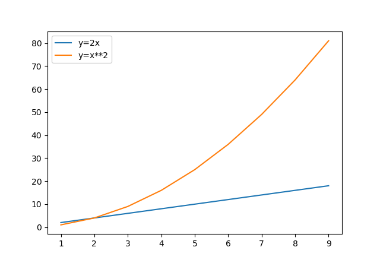

Python Package Index
I moduli della libreria standard sono facilissimi da utilizzare (anche perché sono già installati sul computer...) ma fanno operazioni... standard, niente di veramente eclatante!
Python in realtà mette a disposizione dei suoi utenti miriadi di moduli per i compiti più disparati: creare un codice a barre, calcolare la distanza fra 2 stelle, trasferire una canzone tramite bluetooth, ecc...
La cosa veramente incredibile (su Python) è che tutti questi moduli, sviluppati da chicchessia, sono raccolti in un unico repository: il Python Package index, PyPi. https://pypi.org.

Qui sopra vedete la schermata iniziale del sito. Come vedete sono disponibili oltre 275.000 moduli... Potete cercare praticamente quello che volete: io ho provato con "chicken", "football", "rock music" e ho avuto soddisfazione...
Certo, al nostro livello non siamo in grado ancora di usare qualsivoglia modulo (soprattutto perché siete ancora particolarmente allergici a leggere la documentazione), ma imparare a scaricarli e a installarli (fatto uno, fatto tutti) e poi ad usare qualcuno dei più semplici... si può!
Per installare un modulo di questi, non c'è bisogno di mettersi a cercarlo nel sito... basta usare Thonny!
Da lì digitate la stringa di ricerca (nell'esempio c'è la stringa wxpython) e cliccate sul pulsante di ricerca...

Trovato il pacchetto che vi serve, non serve altro che cliccare sul pulsante INSTALLA in basso e attendere :)
Se invece non avete (ancora) Thonny, aprite il prompt dei comandi Windows oppure il terminale Mac o Linux e digitate:
Quando ha finito... ve ne accorgerete.
Modulo pillow
Il modulo pillow è considerato il modulo standard per la manipolazione delle immagini in Python.
In realtà sarebbe un sostituto (built-in replacement) per la vera libreria di default per il trattamento delle
immagini: PIL, ovvero la Python Image Library.
Ma ormai è considerata lo standard per lavorare con le immagini.
Installate il modulo pillow e poi procedete ad esaminare e testare il seguente esempio, aggiungendo ogni volta
un pezzetto al codice.
# per compatibilità con PIL anche il modulo pillow si chiama PIL
from PIL import Image
# Per aprire e visualizzare una immagine
# l'immagine deve trovarsi nella stessa cartella dello script
img = Image.open("python.png")
img.show()
Alcune operazioni sparse sull'immagine:
# (oppure verticalmente, mettendo Image.FLIP_TOP_BOTTOM)
flippedImg = img.transpose(Image.FLIP_LEFT_RIGHT)
flippedImg.show()
Per ritagliare una immagine (crop) occorre utilizzare il metodo: Image.crop( (left, upper, right, lower) )
# ritagliamo l'immagine da (0,0) in alto a sx a (300,300) in basso a dx
croppedImage = img.crop( (0,0,300,300) )
Se invece volessimo salvare l'immagine modificata... (ad esempio quella in bianco e nero)
Proviamo adesso alcune opzioni per sfocare l'immagine (blur)
# occorre importare anche l'oggetto ImageFilter
from PIL import Image, ImageFilter
img = Image.open("prova.jpg")
blurImage = img.filter(ImageFilter.BLUR) # blur generico
boxBlurImage = img.filter(ImageFilter.BoxBlur(20)) # blur radiale
gaussImage = img.filter(ImageFilter.GaussianBlur(20)) # blur gaussiano
Il metodo expand() può essere utilizzato per aggiungere bordi alle immagini, espandendo la loro dimensione senza intaccare la vista originale
from PIL import Image, ImageOps
image = Image.open("immagine.jpg")
expanded_image = ImageOps.expand(image, border=20, fill="red")
expanded_image.show()
Nuove Immagini e testo
In pillow i colori delle immagini vengono gestiti attraverso informazioni a 4 bytes con la specifica chiamata RGBA. Questa specifica è una
estensione della classica RGB a 3 bytes in cui la A finale, anch'essa rappresentata con 1 byte, indica l'alpha color, ovvero la trasparenza,
dove 0 indica la massima trasparenza (invisibile), mentre 255 indica nessuna trasparenza (opacità).
from PIL import Image
image = Image.new('RGBA', (600,400), (255,0,0,128) )
image.show()
Se si preferisce è possibile utilizzare la notazione esadecimale
Immaginate di voler piazzare un testo al centro del rettangolo così creato
from PIL import Image, ImageDraw
image = Image.new('RGBA', (600,400), (255,0,0,128) )
text = "Ho capito tutto!"
font = ImageFont.truetype("arial.ttf", size=30)
text_position = (150, 185)
text_color = (0,255,255)
draw = ImageDraw.Draw(image)
draw.text(text_position, text, fill=text_color, font=font)
image.show()
Screenshot
Il modulo ImageGrab serve per fare gli screenshot del Desktop. Espone banalmente la funzione grab() che realizza il compito assegnatole.
L'esempio sopra fa uno screenshot del Desktop e lo salva come file "screenshot.png" nella stessa cartella ove si trova lo script Python con il codice sopra.
Se leggete la documentazione della funzione grab saprete che è possibile fare lo screenshot anche ad una sola sezione dello schermo. La prova di questo ve la lascio come esercizio.
Esercizi
Volete fare, sapere di più? Leggete la documentazione! Ma per imparare ad usare qualcosa... occorre esercitarsi!!!
Esercizio 661
Data una immagine qualsiasi (ad esempio, la fantastica pippo.jpg, da mettere nella stessa cartella del seguente script) utilizzare il modulo pillow
per creare le immagini pippoAllaRovescia.jpg, contenente l'immagine iniziale rovesciata (ruotata di 180 gradi) e pippoBiancoNeroRovesciato.jpg contenente
l'immagine iniziale rovesciata e in scala di grigi
Esercizio 662
Data una immagine qualsiasi (ad esempio, la fantastica pippo.jpg, da mettere nella stessa cartella del seguente script) utilizzare il modulo pillow
per creare le immagini pippo_100.jpg, contenente l'immagine iniziale ridimensionata a 100 x 100 pixel e pippo_100_50.jpg contenente l'immagine precedente
ritagliata dall'alto per diventare 100 x 50 pixel.
Esercizio 663
Data un'immagine foto.jpg, creare un programma che applica un effetto "galleria d'arte" creando 4 versioni della stessa immagine con
filtri diversi (normale, bianco e nero, sfocata, contorni) e le salva come foto_normale.jpg, foto_bn.jpg, foto_blur.jpg e foto_contorni.jpg. Utilizzare il filtro ImageFilter.CONTOUR per l'ultima versione.
Esercizio 664
Creare un programma che prende un'immagine logo.png e genera una miniatura (thumbnail) di dimensione massima 200x200 pixel mantenendo le proporzioni originali dell'immagine. Salvare il risultato come logo_thumb.png.
Provate a documentarvi e a utilizzare il metodo thumbnail().
Esercizio 665
Data un'immagine panorama.jpg, creare un programma che la divide in 4 parti uguali (quadrante in alto a sinistra, in alto a destra, in basso a sinistra, in basso a destra) e salva ciascun quadrante come file separato: panorama_tl.jpg, panorama_tr.jpg, panorama_bl.jpg, panorama_br.jpg.
Esercizio 666
Creare un programma che prende due immagini della stessa dimensione (sfondo.jpg e overlay.png) e le combina sovrapponendo la seconda sulla prima con trasparenza del 50%. Salvare il risultato come composizione.jpg.
Provate a documentarvi e a utilizzare i metodi Image.blend() oppure Image.alpha_composite().
Esercizio 671
Fare uno screenshot dello schermo, ridimensionarlo a 800 x 600 pixel e modificarlo in scala di grigi. Salvare l'immagine ottenuta.
Esercizio 672
Una volta eseguito, il programma fornirà 5 secondi all'utente prima di fare lo screenshot, in modo tale da fornirgli il tempo di preparare lo schermo.
Salvare il file con nome screenshot_ANNO_MESE_GIORNO_ORE_MINUTI_SECONDI.jpg.
Esercizio 673
Creare un programma che fa 3 screenshot consecutivi dello schermo a distanza di 2 secondi l'uno dall'altro e li salva con nomi progressivi: screen_1.png, screen_2.png, screen_3.png.
Esercizio 674
Creare un programma che fa uno screenshot solo della parte centrale dello schermo (ad esempio, un'area di 800x600 pixel centrata) e la salva come screen_center.png. Utilizzare la funzione grab() con i parametri appropriati per specificare l'area.
Esercizio 675
Creare un programma che chiede all'utente quanti secondi aspettare prima di fare lo screenshot, attende il tempo specificato, fa lo screenshot, lo ruota di 90 gradi in senso orario e lo salva come screen_rotated.png.
Esercizio 676
Creare un "monitor della produttività": il programma fa uno screenshot ogni 30 secondi per 5 volte, ridimensiona ogni immagine a 320x240 pixel e le salva con timestamp nel nome (ad esempio monitor_14-30-15.png). L'utente deve avere 3 secondi di avviso prima del primo screenshot.
Modulo matplotlib
Il modulo matplotlib serve per creare dei plot, ovvero dei grafici a
partire da funzioni algebriche nel piano e nello spazio.
Immaginate di voler disegnare il grafico della retta y = 2 x.
Scegliete alcuni punti per le ascisse x = [ 1 , 2 , 3 , 4 ]
Calcolate le ordinate corrispondenti y = [ 2 , 4 , 6 , 8 ]
Disegnate il piano cartesiano e vi ponete i punti calcolati: (1,2) (2,4) (3,6) (4,8)
Infine tirate una riga che passa per questi punti
Con matplotlib si possono fare cose del genere. Ci provo per la retta dell'esempio:
import matplotlib.pyplot as plt
x = [1, 2, 3, 4]
y = [2, 4, 6, 8]
plt.plot(x, y)
plt.title("Grafico della retta y = 2 x")
plt.xlabel("Asse X")
plt.ylabel("Asse Y")
plt.show()
Con questo codice ho generato la seguente immagine:

Ovviamente potrei disegnare anche dei pezzi segmentati:
import matplotlib.pyplot as plt
x = [0, 2, 4, 6]
y = [0, 2, 1, 3]
plt.plot(x, y) # per disegnare solo i punti, usa plot(x,y,"o")
plt.title("Punti a caso")
plt.show()


Per caratterizzare il grafico si potrebbe aggiungere una griglia:
# inserisci una di queste funzioni PRIMA di plt.show()
# così visualizzi TUTTA la griglia
plt.grid()
# così visualizzi SOLO le righe VERTICALI
plt.grid(axis="x")
# così visualizzi SOLO le righe ORIZZONTALI
plt.grid(axis="y")
Se vogliamo inserire più di un grafico, si potrebbe inserire una legenda
import matplotlib.pyplot as plt
x = []
f1 = []
f2 = []
for n in range(1,10):
x.append(n)
f1.append(2*n)
f2.append(n**2)
plt.plot( x , f1 , label="y=2x") # aggiungi un'etichetta
plt.plot( x , f2 , label="y=x**2")
plt.legend() # crea la legenda
plt.show()

Se invece di visualizzare l'immagine volete salvarla da qualche parte, invece di show(),
dovete usare il metodo savefig("nomeImmagine.estensione").
Facile 
Si può utilizzare questa libreria anche per disegnare barre verticali od orizzontali, i celebri istogrammi:
import matplotlib.pyplot as plt
nomi = ["Asini", "Bradipi", "Cavalli", "Daini"]
numeri = [5, 8, 2, 4]
plt.bar(nomi,numeri) # per le barre orizzontali, usa barh()
plt.show()

Con quegli stessi dati posso disegnare anche un diagramma a torta:
Basta!
Se volete approfondire un po', guardate il sito ufficiale: https://matplotlib.org/
Oltre alla documentazione (so che non la leggerete) ci sono molti esempi e tutorial...
Esercizi
Se proprio volete imparare... basta solo fare un po' di esercizio 
Esercizio 681
Provate a realizzare una coppia di grafici secondo le seguenti specifiche: sulle ascisse ci vanno le date delle valutazioni e sull'ordinata i voti ottenuti. Il primo grafico rappresenta i voti di una materia a vostra scelta, mentre il secondo è la riga orizzontale fissa che rappresenta la sufficienza. Visualizzare entrambi nello stesso plot.
Esercizio 682
Crea un grafico che rappresenta la funzione y = 3x + 1 nell'intervallo da x = 0 a x = 10.
- Usa almeno 11 punti (da 0 a 10)
- Aggiungi un titolo al grafico
- Etichetta gli assi X e Y
- Visualizza il grafico
Esercizio 683
Hai rilevato le temperature (in gradi Celsius) durante una settimana di ottobre:
- Lunedì: 18°
- Martedì: 20°
- Mercoledì: 19°
- Giovedì: 22°
- Venerdì: 21°
- Sabato: 17°
- Domenica: 16°
Crea un grafico a barre che mostri le temperature dei diversi giorni.
- Usa
plt.bar()per creare le barre - Aggiungi un titolo significativo
- Etichetta correttamente gli assi
Esercizio 684
Hai ottenuto i seguenti voti durante il quadrimestre in Python:
6, 7, 7, 8, 7, 9, 8, 7
Crea un diagramma a torta che mostri la distribuzione percentuale dei voti (quanti 6, quanti 7, quanti 8, quanti 9 hai preso).
- Conta quante volte appare ogni voto
- Usa
plt.pie()per creare il diagramma - Aggiungi le etichette con i voti (6, 7, 8, 9)
Prova a ripetere la generazione del grafico con un elenco di 20 voti generati casualmente scelti fra 6,7,8,9.
Esercizio 685
Disegna nello stesso grafico due funzioni:
f(x) = x²(parabola)g(x) = 4x(retta)
nell'intervallo da x = 0 a x = 5.
- Usa almeno 20 punti per avere curve fluide
- Aggiungi una legenda che distingua le due funzioni
- Aggiungi una griglia per rendere il grafico più leggibile
- Usa colori diversi per le due linee (parametro color in plot())
- Salva il grafico come file "confronto.png" invece di visualizzarlo